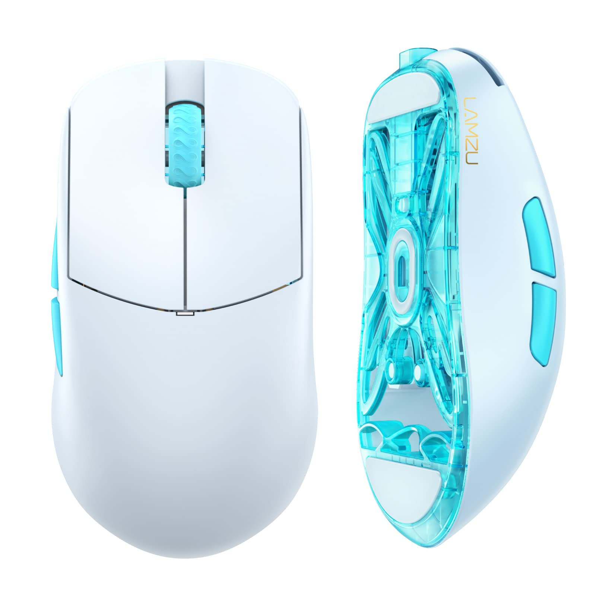

Мышь беспроводная LAMZU Atlantis
Описание товара
Мышь беспроводная LAMZU Atlantis белого цвета имеет симметричную конструкцию, поэтому одинаково удобна для когтевого хвата левой и правой рукой. Благодаря беспроводному соединению с устройством через ресивер USB вы сможете ощутить свободу в движениях. В радиусе 10 м можно свободно передвигаться и комфортно управлять мышью в зоне сигнала. Активность манипулятора до 70 часов обеспечивает встроенный аккумулятор емкостью 300 мА·ч. В основе LAMZU Atlantis ‒ светодиодный сенсор с разрешением 26000 dpi.
Характеристики товара
Характеристика 1: Заводские данные Гарантия продавца / производителя 12 мес. Страна-производитель Китай Общие характеристики Тип мышь Модель LAMZU Atlantis Внешний вид Основной цвет белый Дополнительный цвет голубой Подсветка нет Тканевая оплетка кабеля нет Стилизация нет
Характеристика 2:Управление Общее количество кнопок 6 Дополнительные кнопки боковые, смены DPI/CPI Датчик Максимальное разрешение датчика 26000 dpi Тип сенсора мыши оптический светодиодный Модель сенсора мыши PixArt PAW3395 Скорость (IPS) 650 IPS Режимы работы датчика 200 dpi, 26000 dpi
Подробное описание товара
Мышь беспроводная LAMZU Atlantis белого цвета имеет симметричную конструкцию, поэтому одинаково удобна для когтевого хвата левой и правой рукой. Благодаря беспроводному соединению с устройством через ресивер USB вы сможете ощутить свободу в движениях. В радиусе 10 м можно свободно передвигаться и комфортно управлять мышью в зоне сигнала. Активность манипулятора до 70 часов обеспечивает встроенный аккумулятор емкостью 300 мА·ч. В основе LAMZU Atlantis ‒ светодиодный сенсор с разрешением 26000 dpi. Максимальный показатель дает высокую скорость реакции, что помогает геймерам оказаться впереди соперников. Возможность смены dpi при помощи специальной кнопки позволяет настроить мышь в соответствии с работой, которую пользователь выполняет. Для легкого и уверенного скольжения манипулятора по любым поверхностям используются сменные ножки.